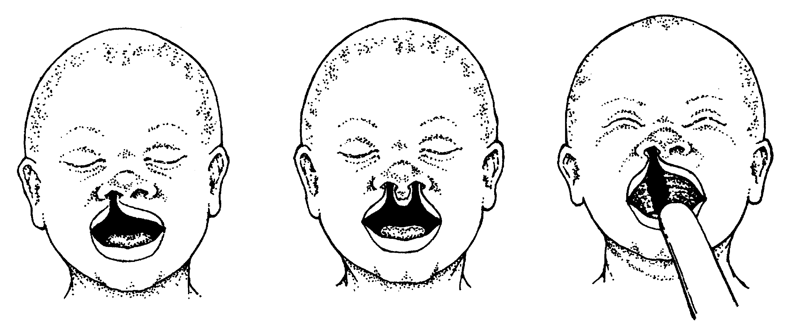

Doga anomaliýalaryň dürli görnüşleri bar, ýöne olaryň içinden käbirleri ýygy duş gelýär. Olaryň käbirleri gaýragoýulmasyz hirirgiki kömegi bermekligi talap edýär. Käbirlerini düzetmeklik bolsa, çaganyň belli bir ýaşa barmaklygyny talap edýär. Irki diagnostika keseliň soňunyň gowy bolmaklygyna getirýär we ene- atalara bejerginiň görnüşleri barada irki wagtda habar bermäge mümkinçilik döredýär.
9.2.1 Ýokarky dodagyň we kentlewügiň ýirigi
Bu iki kemislikler bile, käbir ýagdaýlarda bolsa aýratynlykda hem duşup bilerler (surata seret). Ene-atalara bu kynçylygy çözüp bolýanlygy düşündiriň, sebäbi olar kosmetik taýdan çaganyň ýagdaýy boýunça howsalanýarlar.
Bejergi
Ýokarky dogagyň izolirlenen ýirigi bolan bäbeklerde iýmitlenme bozulmaýar. Kentlewügiň ýirigi iýmitlenme wagtynda kynçylyk döretýär. Bäbek kada ýuwdup bilýär, emma emip bilmeýär: süýt çaganyň burnuna duşýär we öýkene aspirirlenip (düşüp) bilýär. Eger-de çaga bileleşip gelýän Pýera-Robina (aşaky äňiň ösmezligi we yza süýşmegi) sindromyndan ejir çekýän bolsa, bu çagalarda dem alyş ýollarynyň obstruksiýasy uklan wagty bolup biler.
 Çagany käseden we çemçeden naharlaň ýa-da bar bolsa ýörite emzik bilen emdiriň, bir şertde eger emzikleriň we çüýşeleriň arassalygy saklanylsa. Bu çagalary naharlamaklygyň tehnikasy süýdiň çemçeden ýa-da pipetkadan ýa-da başga bir berilýän zatdan çaganyň göni diliniň arkasyna, ýagny bogazyna düşmeli. Soňra iýmiti ýuwtmaklyk kada ýagdaýda geçýär.
Çagany käseden we çemçeden naharlaň ýa-da bar bolsa ýörite emzik bilen emdiriň, bir şertde eger emzikleriň we çüýşeleriň arassalygy saklanylsa. Bu çagalary naharlamaklygyň tehnikasy süýdiň çemçeden ýa-da pipetkadan ýa-da başga bir berilýän zatdan çaganyň göni diliniň arkasyna, ýagny bogazyna düşmeli. Soňra iýmiti ýuwtmaklyk kada ýagdaýda geçýär.
Dem alyş ýollarynyň uklan wagtyndaky obstruksiýasy gipoksemiýany göredýär we çaganyň fiziki taýdan yza galmaklygyna getirýär we ýöriteleşen bejergini talap edýär.
 Bäbeklik döwründe ünsli gözegçilik geçirip durmaklyk çaganyň iýmitlenişi we ösmegi üçin zerurdyr.
Bäbeklik döwründe ünsli gözegçilik geçirip durmaklyk çaganyň iýmitlenişi we ösmegi üçin zerurdyr.- Dodagyň hirurgik tikilmegi 6 aýlyk wagtda geçirilýär, kentlewügi tikmeklik bolsa çaga 1 ýaşanda geçirilýär. Dodagy tikmeklik has irki wagtda geçirseň hem bolýar, eger, anesteziýany geçirmeklik howpsyz bolsa we tehniki korreksiýa mümkin bolsa.
- Operasiýadan soňra dowamly gözegçilikleri hökmany geçiriň çaganyň eşidişine we çaganyň gürlemek ukybyna gözegçilik geçirmeklik üçin (ortaky otitleriň ýaýranlygy sebäpli).
9.2.2 Bäbeklerde içege ýöremezligi
Bu priwratnigiň gipertrofik stenozy, içegäniň atreziýasy, içegeleriň nädogry epilmegi we soňra çolaşmagy bilen, mekonial dyky sindromy, Girşprung keseli (doga ýogyn içegäniň agangliozy) ýa-ga art bujagyň atreziýasy bilen bagly bolmagy mümkin.
Kesel kesgidi
- Keseliň kliniki alamatlary içege ýöremezligiň derejesi bilen bagly. Proksimal içege ýöremezligi – gaýtarma we içegäniň minimal derejede ýellenmekli bilen häsiýetlenýär. Distal/ ýöremezlikde – ilkinji garynyň çişmegi (parez) alamatlary bolýar, gaýtarmaklyk bolsa soňra döreýär.
- Bäbeklerde ýaşyl reňkli (öt bilen) gaýtarmaklyk beýleki alamatlaryň bolmadyk ýagdaýlarynda içege ýöremezliginiň alamaty hökmünde seredilýär we gaýragoýulmasyz hirurgiki kömegi berilmeklige görkezme bolup durýar.
- Priwratnigiň stenozy «çüwdürim» görnüşinde gaýtarmanyň, öt bilen reňklenmedik we adaty 3-6 hepdelikde ýüze çykýar.
 Suwsyzlyk we elektrolit balansynyň bozulmaklary häsiýetli.
Suwsyzlyk we elektrolit balansynyň bozulmaklary häsiýetli.- Garynyň ýokarky böleklerinde zeýtun şekilli emle gelme eliňe ilýär (ulalan priwratnik).
Garynyň ulalmaklygynyň beýleki sebäpleri barada pikirleniň (mysal üçin, dinamik ýöremezlik sepsis keselinde, nekrotizirleýän enterokolit ýa-da doga merezýeli, assit).
Bejergi
- Eglenmän intensiw bejergi geçirmeli we gaýragoýulmasyz çaga hirurgyny kömege çagyrmaly.
- Agyzdan hiç zat bermäň. Gaýtarmaklyk ýa-da garynyň çişmegi bolan ýagdaýlarynda nazogastral zont
goýuň.
- Damardan suwuklyklar: Darrou erginini ýarym konsentrasiýaly ýa-da kada fiziologik ergini + 5%
glýukozany (deksrtoza) beriň:
- Fiziologiki ergini ýa-da 5% dekstrozanyň erginini 20 ml/kg möçberde çalt goýbermeklik bilen şoguň
öňüni alyň.
- Eger-de çagada şok bolmasa, emmasuwsyzlyk bar bolsa, 10–20 ml/kg Dorrou ergini ýarym konsentrasiýada ýa-da fiziologiki ergini 5% dekstroza bilen 20 minudyň dowamynda goýberiň.
- Soňra suwuklyklaryň goldaýjy möçberini goýberiň (bap 10.2) + nazogastral zont arkaly we
gaýtarma bilen ýitirilýän möçber.
- Ampisillin ediň (sanjym 25-50 mg/kg 4 sapar g. dowamynda) + gentamisin (7,5 ml/kg 1 sapar g.
dowamynda beriň) + metronidazol 7,5 mg/kg her 12 sagatdan ediň, birinji möçber edilenden 24 sagatdan soň başlaň.
9.2.3 Öňki garyn diwarynyň defektleri
Öňki garyn diwarynyň doly ösmezligi, bu ýagdaýda garyn boşlygy açyk galýar.

Kesel kesgidi
- Içegeler doly açyk bolmagy mümkin (gastroshizis), ýa-da garnyň nemli bardasynyň (brýuşinanyň) ýuka gatlagy bilen ýapylan bolmagy mümkin (omfalosele) (surata seret).
Bejergi
- Steril daňy goýuň we ony polietilen paket
ýa-da iýmit üçin niýetlenen plenka bilen
ýapyň (suwsuklyk ýitirilmekliginiň öňüni
almak üçin). Açyk içegeler suwuň çalt ýiritilmeginiň sebäbi bolýar we gipotermiýany döredýärler.
- Agyzdan hiç zat bermäň. Nazogastral zont kadaly drenirleme üçin goýuň.
- Damardan suwuklyklary goýberiň: kada fiziologiki ergini + 5% glýukoza (dekstroza) ýa-da Darrou
ergininiň ýarym konsentrasiýasyny ulanyň:
- Fiziologiki ergini ýa-da Hartmanyň erginini 20 ml/kg möçberde çalt goýbermeklik bilen şoguň öňüni alyň.
- Eger-de çagada şok bolmasa, emma suwsyzlyk bar bolsa, 10–20 ml/kg Dorrou ergini ýarym konsentrasiýada ýa-da fiziologiki ergini 5% dekstroza bilen 20 minudyň dowamynda ediň.
- Soňra suwuklyklaryň goldaýjy möçberini goýberiň (bar 10.2), + nazogastral zont arkaly we gaýtarma bilen ýitirilýän möçber.
- Ampisillin (25-50 mg/kg damardan 4 sapar günüň dowamynda) + gentamisin (7,5 mg/kg damardan 1 sapar gününň dowamynda) + metronidazol (15 mg/kg ilkinji möçberde. Soňra 7,5 mg/kg her 12 sagatdan, ilkinji möçber goýberilenden 24 sagatdan soň başlap).
Hirurgyň gayragoýulmasyz maslahaty gerek.
9.2.4 Miýelomeningosele
Kesel kesgidi
 Kelle süňklerinden ýa-da oňurgadan çykyp duran uly bolmadyk kista has köp bolýan ýeri- bu bil oňurgasydyr.
Kelle süňklerinden ýa-da oňurgadan çykyp duran uly bolmadyk kista has köp bolýan ýeri- bu bil oňurgasydyr.- Newrologiki bozulmalary döretmegi mümkin (içegäniň motorikasynyň bozulmagy, peşew haltanyň işiniň bozulmagy ýa-da aýaklarynda hereket edişiň bozulmagy), şeýlede gidrosefaliýany döretmegi mümkin.
Bejergi
- Steril daňy goýuň.
- Kistanyň deşilmeginde benzilpenisillin (sanjym 100-150 mg/kg g. Dowamynda 2 sapar edilende) ýa-da ampisillin (25–50 ml/kg sanjym ýa-da damardan 4 sapar g. dowamynda); + gentamisin (7,5 ml/kg 1 sapar g. dowamynda) 5 gün beriň.
Çaga hirurgiýasyndan tejribesi bolan hirurgyň maslahaty gerek.
9.2.5 Doga çüýjük süňkiniň çykygy
Kesel kesgidi
- Agyr ýagdaýlar çaga dogulandan soň ilkinji seredilişde anyklanmaly.
- Bir taraplaýyn çykykda şol tarapdaky aýak kelte bolýar, budyň epilen görnüşinde hereketlenmesi çäklenen bolýar we otyrýerindäki gasynlaryň assimmetriýasy bolýar, käbir halatlarda But süňkiniň kellejiginiň ýerine giren wagtynda häsiýetli sesi (Optolani simptomy) bolýar.
- Keseli kesgitlemesini rentgen barlagyny geçirmeklik bilen we ultrases barlagyny geçirmek bilen tassyklap bolýar (has takyk maglumatlary pediatriýa boýunça gollanmalardan okap bolar).
Bejergi
- Ýeňil derejeli çykyklarda budy epilen we giňeldilen (otwedennyý) görnüşinde iki sany arlygyň kömegi bilen ýa-da dürli ýarymgaty şinalaryň kömegi bilen 2-3 aýyň dowamynda fiksirläň. Milli adaty usullaryň biri bu çagany arkasynda aýaklary giňelen görnüşinde edip götermeklikdir, bu hem şol şinalar goýulan ýaly täsir edýär.
- Agyr ýagdaýlarda epilen we giňeldilen butlary gips
daňysynyň kömegi bilen berkidýärler.
- Çaga hirurgynyň konsultasiýasy gerek.
9.2.6 Ekwinowarus (at-warus) kesedabanlylyk
Kesel kesgidi
- Dabanynyň durgunly kada däl ýagdaýda bolmaklygy.
- Mahsus görnüşleriň üç sany defekti bar: dabanda epilme, ökjäniň içine tarap rotasiýasy (içine
öwrülmegi) we dabanyň öňki böleginiň içine süýşmegi.
Bejergi
- Ýeňil pozision defektlerde (dabany kada görnüşe daşky tijenmeler arkaly getirip bolýar) dabany çekmeklik, çaga dogulandan soň başlanmaly.
- Aram deformasiýa: korregirleýän manipulýasiýalar, çaga dogulandan soň
- Dogry ýagdaýy ýelmejiň ýa-da gips daňysynyň kömegi bilen goldaň (iç ýüzünde ýeterlik ýumşak matalary goýmak bilen) ýokarda agzalan daňyny suratda görkezijişi ýaly yzygiderlikde goýuň
- Bu daňyny 2 hepdede 1 sapar ýa-da defekt doly aýrylýança goýmaly.
- Mümkin şinany çaga ýöräp başlaýança dakmaklyk gerek bolar.
- Agyr deformasiýa ýa-da giç ýüzlenmelerde: hirurgiki korreksiýa gerek.